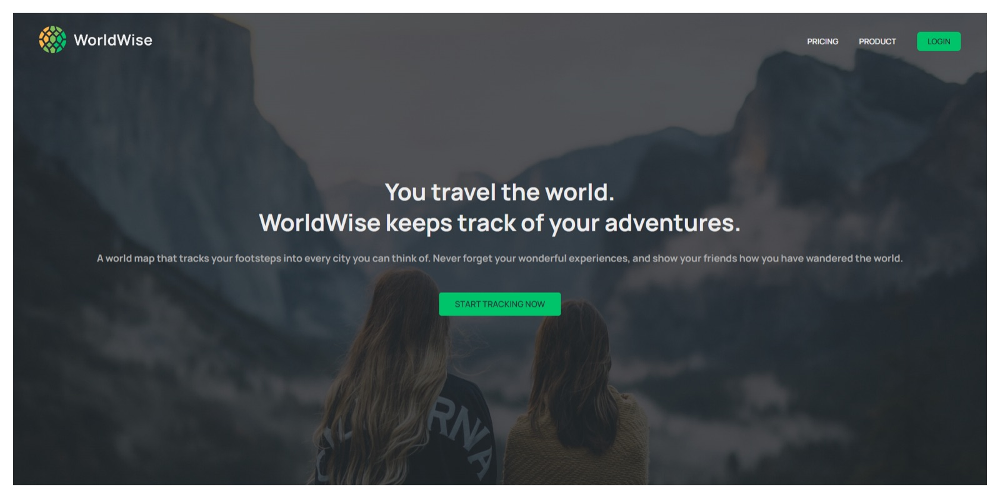
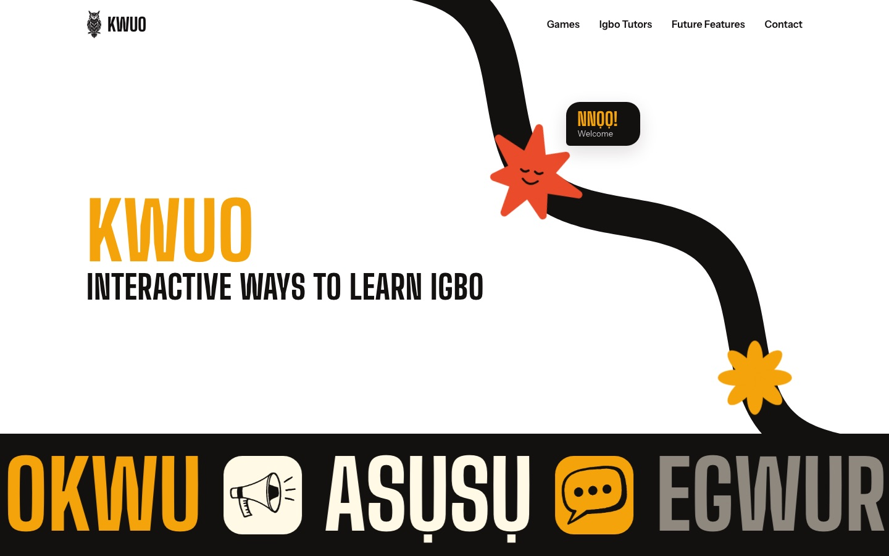

maps · a postcard from
Worldwise
A world map that tracks your footsteps into every city you can think of. Click a spot, log the trip, and watch the map fill up.
stack: React · Vite · React Leaflet · OpenWeather API
role: design & build
wish you were here →
A map that remembers
Worldwise is the lightest build here, and the most personal: a travel log where the map is the interface. Pick a city, add when you went and a note, and it lands as a pin you can come back to.
